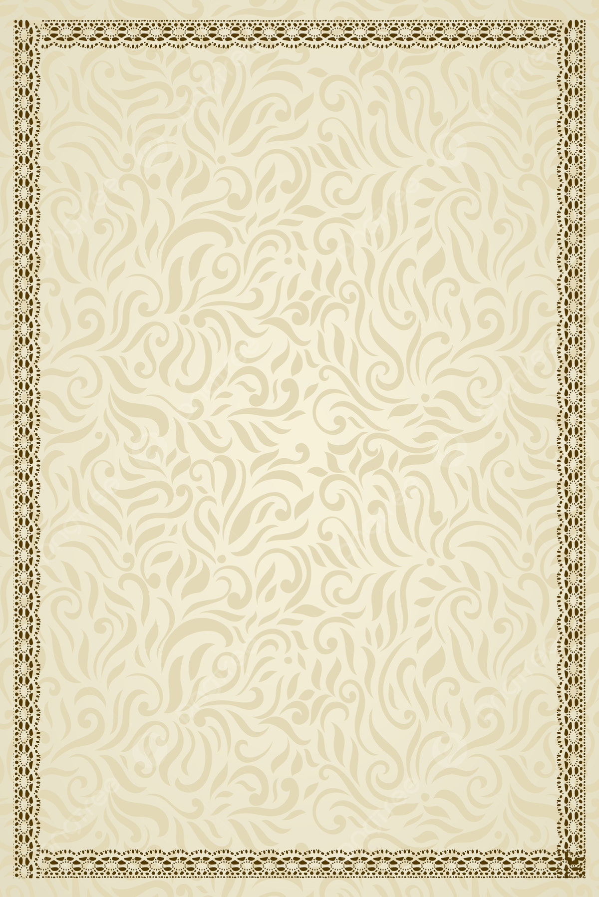

സാമൂഹ്്യശാസ്ത്രം I
ഭാഗം - 2
സ്റാൻഡേർഡ് IX
കേരളസർക്ാർ
പൊൊതുവിദ്്യയാഭ്യാസവകുപ്പ്
തയ്ാറാക്കിയത്
സംംസ്ാന വിിദ്്യാഭ്്യാസ ഗവേഷണ പരിിശീലന സമിിതിി (SCERT) കേരളംം
2024
Page 1
Page 2
State Council of Educational Research and Training (SCERT)
Poojappura, Thiruvananthapuram 695012, Kerala
Website : www.scertkerala.gov.in
e-mail : scertkerala@gmail.com, Phone : 0471 - 2341883,
Typesetting and Layout : SCERT
First Edition : 2024
Printed at : KBPS, Kakkanad, Kochi-30
© Department of General Education, Government of Kerala
സാമൂഹ്്യശാസ്ത്രം I
9
ദേശീയഗാനംം
ജനഗണമന അധിനായക ജയഹേ
ഭാരത ഭാഗ്യവിധാതാ,
പഞ്ാബസിന്ധു ഗുുജറാത്ത മറാഠാ
ദ്ാവിഡ ഉത്ക്ക
ല ബംഗാ,
വിന്ധധ്യഹിമാചല യമുുനാഗംഗാ,
ഉച്ഛല ജലധിതരംഗാ,
തവശുുഭനാമേ ജാഗേ,
തവശുുഭ ആശിഷ മാഗേ,
ഗാഹേ തവ ജയ ഗാഥാ
ജനഗണമംഗലദായക ജയഹേ
ഭാരത ഭാഗ്യവിധാതാ
ജയഹേ, ജയഹേ, ജയഹേ,
ജയ ജയ ജയ ജയഹേ!
ഇന്ത്യ എന്റെ രാജ്യമാണ്. എല്ാ ഇന്തത്യക്കാ്കാരുും എന്റെ
സഹോ�ോദരീ സഹോ�ോദരന്ാരാണ്.
ഞാൻ എന്റെ രാജ്യത്തെ സ്നേഹിക്കുുന്നുു;
സമ്പൂർണ്ണവുും വൈവിധ്യപൂൂർണ്ണവുുമായ അതിന്റെ
പാരമ്പര്യത്തിൽ ഞാൻ അഭിമാനം കൊ�ൊള്ളുുന്നുു.
ഞാൻ എന്റെ മാതാപിതാക്കളെയുും
ഗുുരുക്ക്കന്മാരെയുും മുുതിർന്നവരെയുും
ബഹുുമാനിക്്കുുംും.
ഞാൻ എന്റെ രാജ്യത്തിന്റെയുും എന്റെ
നാട്ടുുകാരുടെയുും ക്ഷേമത്തിനുും ഐശ്വര്യത്തിനുും
വേണ്ി പ്രയത്നിക്്കുുംും.
പ്രതിിജ്ഞ
Page 3
പ്രിയപ്പെട്ട കുട്ടിികളേ,
സമകാലീനസമൂഹത്്തെ തിിരിിച്ചറിിയുന്നതിിനും ഫലപ്രദമായ
ഇടപെടലുകൾ നടത്തിക്്്കകൊണ്ട് ഉത്തരവാദിത്തപൂർണ്ണമായ പൗര
ജീവിിതം നയിക്കു്കുന്നതിിനും നമു്കു കഴിിയണം. അതിിന്്, സാമൂഹ്യ
ശാസ്ത്രപഠനം നമ്്മെ സഹായിക്കുന്നു്കുന്നു. ചോxോളനാട്ടിിൽ നിന്്നുുംും ഡൽഹിി
യിലേക്ക്് എന്ന ആറാമത്്തെ പ്രമേയത്തിിൽ ചോxോളരാജ്യം മുതൽ
ഡൽഹിി സൽത്തനത്ത്് വരെയുള്ള ചരിിത്ം പ്രതിപാദിക്കുന്നു്കുന്നു.
ജനാധിപത്്യത്തിന്്റെ വ്യയാപനം സ്ഥാപനങ്ങളിിലൂടെ എന്ന ഏഴാമത്്തെ
പ്രമേയത്തിിൽ വിിവിിധ സ്ഥാപനങ്ങളിിലൂടെ ജനാധിപത്്യത്തിന്്റെ
വ്യയാപനത്്തെപ്പറ്റിി ചർച്ച ചെയ്ുന്നു. ലിിംഗവിവേചനമിില്ലാത്ത സമൂഹ
ത്തിലേക്ക്് എന്ന എട്ടാമത്്തെ പ്രമേയത്തിിൽ ലിിംഗവ്യത്യാസം,
ലിിംഗപദവിി, ധർമ്മങ്ങൾ, ഭരണഘടനയിലെ
ലിിംഗപദവിി
എന്നിിവ ചർച്ച ചെ
യ്ുന്നു. പ്രധാന വിിവര സ്ര
രോതസുകളെ
പരിച
യപ്പെട്്ടുുംും വിിശകലനം ചെ
യ്ും വ്യാഖ്്യാനിച്്ചുുംും അറിിവു
നിിർമ്മാണം നട്കുന്ന രീതിിയിിലാണ്് പാഠങ്ങൾ വിിഭാവനം
ചെ
യ്തിട്ടുിട്ടുള്ളത്്. ശാസ്ത്ര-സാങ്കേതിിക സൗകര്യങ്ങളെ പഠനത്തിിൽ
പ്രയോ�ോജനപ്പെടുത്തുന്നതിിന്് അവസരമുണ്ട്. ജനാധിപത്്യ മതേതര
മൂല്യങ്ങളോ�ോടൊ�ൊപ്പം ശാസ്ത്രീയവും ബഹുസ്വരതയെ ഉൾക്്ക
കൊള്ളുള്ളുന്ന
തുമായ മനോ�ോഭാവവും ഇതിിലൂടെ കുട്ടിികളിിൽ രൂപപ്പെടേണ്ടതാണ്്.
ആശംസകളോ�ോടെ,
ഡോ�ോ. ജയപ്രകാശ് ആര്. കെ.
ഡയറക്ടർ
എസ്്.സിി.ഇ.ആര്.ടിി.
Page 4
അംംഗങ്ങൾ
അക്കാദമിക് കോ�ോഡിനേറ്റർ
സുരേഷ്കുമാർ എസ്.
റിിസർച്ച്് ഓഫീസർ, എസ്്.സിി.ഇ.ആർ.ടിി, കേരളം
സംംസ്ാന വിിദ്്യാഭ്്യാസ ഗവേഷണ പരിിശീലന സമിിതിി (SCERT) കേരളംം
വിിദ്്യയാഭവന്, പൂജപ്ുര, തിിരുവനന്തപുരംം 695 012
പ്രദീപൻ ടിി.
എച്ച്്.എസ്്.എസ്്.ടിി., ഹിിസ്റ്ററിി
ജിി.എച്ച്്.എസ്്.എസ്്. പാലയാട്്, കണ്ണൂർ
നജീംം എ.
പ്രിൻസിപ്ാൾ, ജി.എച്ച്്.എസ്.എസ്.
കടയ്ക്കൽ, കൊ�ൊല്ം
രാജൻ എംം.
എച്ച്്.എസ്്.ടിി., സോ�ോഷ്്യൽ സയൻസ്്
ജിി.എച്ച്്.എസ്്. നാഗലശ്ശേരിി, പാല്കാട്്
ശ്ീജിിത്് എംം. മൂത്തേടത്്
എച്ച്്.എസ്്.ടിി., സോ�ോഷ്്യൽ സയൻസ്്
സിി.എൻ.എൻ. ജിി.എച്ച്്.എസ്്. ചേർപ്പ്്, തൃശ്ശൂർ
സന്്യാറാണിി പിി.എസ്.
എച്ച്്.എസ്്.ടിി., സോ�ോഷ്്യൽ സയൻസ്്
ജിി.എച്ച്്.എസ്്.എസ്്. അഞ്ചൽ വെസ്റ്റ്്, കൊ�ൊല്ം
ബിനോ�ോ പിി. ജോ�ോസ്
അസിിസ്റ്റന്റ്് പ്്രരൊഫസർ
സെന്റ്് ഡൊ�ൊമനിിക്് കോ�ോളേജ്്
കാഞ്ഞിിരപ്പള്ളിി, കോ�ോട്ടയം
ഡോ�ോ. നന്ദകുമാർ ബിി.വിി.
അസിിസ്റ്റന്റ്് പ്്രരൊഫസർ
എസ്്.എൻ. കോ�ോളേജ്്
വർ്കല, തിിരുവനന്തപുരം
യൂസഫ് കുമാർ എസ്.എംം.
പ്രിൻസിപ്പൽ, ജിി.എച്ച്്.എസ്്.എസ്്.
ചിിതറ, കൊ�ൊല്ം
അജു എസ്.
എച്ച്്.എസ്്.എസ്്.ടിി., ഹിിസ്റ്ററിി
ജിി.എച്ച്്.എസ്്.എസ്്.
വെച്ചൂച്ചിിറ കോ�ോളനിി, പത്തനംതിിട്ട
അഡ്്വൈസർ
ചെയർപേഴ്സൺ
ഡോ�ോ. ശിിവദാസൻ പിി.
സീനിിയർ പ്്രരൊഫസർ, ഡിപ്പാർട്ടുമെന്റ്്
ഓഫ്്
ഹിിസ്റ്ററിി, കാലിക്കട്ട് യൂണിവേഴ്്സിിറ്റിി
ഡോ�ോ. കെ.എൻ. ഗണേഷ്
ചെയർമാൻ, കേരള കൗൺസിിൽ ഫോ�ോർ
ഹിസ്റ്റോറിക്ക്കൽ റിിസർച്ച്്
വിദഗ്ധർ
പാഠപുസ്തകരചനാസമിിതിി
ഡോ�ോ. ബൈ
ജു കെ.സിി.
പ്്രരൊഫസർ & വൈസ്് ചാൻസിിലർ (ഇൻ-ചാർജ്്)
ഡിപ്പാർട്ടുമെന്റ്്
ഓഫ്് ഇക്കണോ�ോമിിക്്സ്്,
സെ
ൻട്രൽ യൂണിവേഴ്്സിിറ്റിി ഓഫ്് കേരള, കാസർഗോ�ോഡ്്
ഡോ�ോ. കെ.കെ. രാധ
പ്രിൻസിപ്പൽ (റിിട്ട)
ഗവ. വിിമൻസ്് കോ�ോളേജ്്
തിിരുവനന്തപുരം
ഡോ�ോ. പ്രദീപ്കുമാർ കെ.
അസോ�ോസിയേറ്റ്് പ്്രരൊഫസർ & ഹെ
ഡ്ഡ്്
ഡിപ്പാർട്ടുമെന്റ്്
ഓഫ്് പൊ�ൊളിിറ്റിക്ക്കൽ സയൻസ്്
ഗവ. കോ�ോളേജ്്, ആറ്റിിങ്ങൽ, തിിരുവനന്തപുരം
Page 5


ഈ പുസ്തകത്തിിൽ പഠനസൗകര്യത്തിിനായിി
ചിില ചിിഹ്നങ്ങൾ ഉപയോ�ോഗിിച്ചിിരിിക്ുന്ു
ഉള്ളടക്കം
ഉള്ളടക്കം
06
07
08
ചോ�ോളനാട്ടിിൽ നിിന്്നുുംം
ഡൽഹിിയിലേക്ക്
111-128
ജനാധിിപത്യത്തിന്റെ വ്യാപനംം
സ്ാപനങ്ങളിിലൂടെ
129-150
ലിംംഗവിവേചനമിില്ലാത്ത
സമൂഹത്തിലേക്്
151-166
ചർച്ചചെയ്്യാാംം
കൊ�ൊളാഷ് നിിർമ്ാണംം
പ്ലക്ാർഡ് നിിർമ്ാണംം
കുറിിപ്് തയ്ാറാക്കുക
അധികവായനയ്ക്ക് - വിിലയിിരുത്തലിിന്
വിധേയമാക്കേണ്ടതില്ല
പഠനപ്രവർത്തനംം
വിിലയിിരുത്തൽ ചോ�ോദ്്യങ്ങൾ
തുടർപ്രവർത്തനങ്ങൾ
Page 6

ഭാരതത്തിൻ്റെ ഭരണഘടന
ആമുഖം
ഭാരതത്തിലെ ജനങ്ങളായ നാം ഭാരതത്തെ ഒരു
1[പരമാധിികാര സ്ഥിിതിിസമത്വ മതേതര ജനാധിിപത്യ
റിിപ്പബ്ലിിക്ായിി] സംവിധാനം ചെയ്ുവാനും അതിലെ
പൗരന്ാർക്്കെല്ാം:
സാമൂഹ്്യവും സാമ്പത്തികവും രാഷ്ട്രീയവും ആയ നീതിിയും;
ചിന്തയ്കും
ആശയപ്രകടനത്തിനും
വിശ്വാസത്തിനും
മതനിഷ്ഠയ്കും ആരാധനയ്കും ഉള്ള സ്വാതന്ത്്ര്യയവും;
പദവിയിലും അവസരത്തിലും സമത്വവും;
സംപ്രാപ്തമാക്കുവാനും;
അവർക്്കെല്ാമിടയിൽ
വ്യക്ിയുടെ അന്തസ്ും
2[രാഷ്ട്രത്തിൻ്്റെ ഐക്യവും
അഖണ്ഡതയും] ഉറപ്ുവരുത്തിക്്കകൊണ്ട് സാഹോോദര്യം
പുലർത്തുവാനും;
സഗൗരവം തീീരുമാനിച്ിരിക്കയാൽ;
നമ്മുുടെെ ഭരണഘടനാനിിിർമ്മാണസഭയിിിൽ ഈ 1949
നവംബർ ഇരുപത്താറാംǰ ദിവസം ഇതിിനാൽ ഈ ഭരണ
ഘടനയെ� സ്വീീ�കരിിക്കുകയുംം� നിിിയമമാക്കുകയുംം� നമുക്കു
തന്നെų പ്രദാനം ചെxയ്യുുകയുംം� ചെxയ്യുുന്നു.
1. 1976 - ലെ ഭരണഘടന (നാല്പത്തിരണ്ാം ഭേദഗതി) ആക്റ്റ്് 2-ാം വകുപ്ു
പ്രകാരം ‘‘പരമാധികാര ജനാധിപത്യ റിപ്പബ്ിക്് ’’ എന്നതിന്് പകരം ചേർ
ത്ത്് (3.1.1977 മുതൽ പ്രാബല്യം).
2. മേല്പറഞ്ഞ ആക്റ്റ്് 2-ാം വകുപ്ു പ്രകാരം ‘‘രാഷ്ട്രത്തിൻ്്റെ ഐക്യം’’എന്നതിനു
പകരം ചേർത്ത്് (3.1.1977 മുതൽ പ്രാബല്യം).